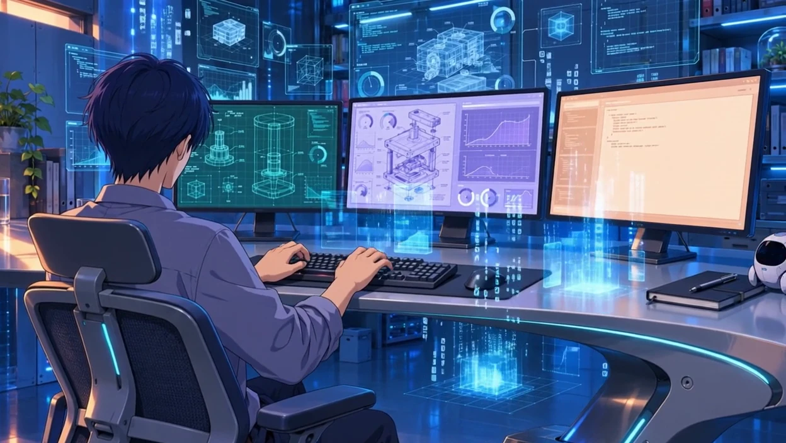
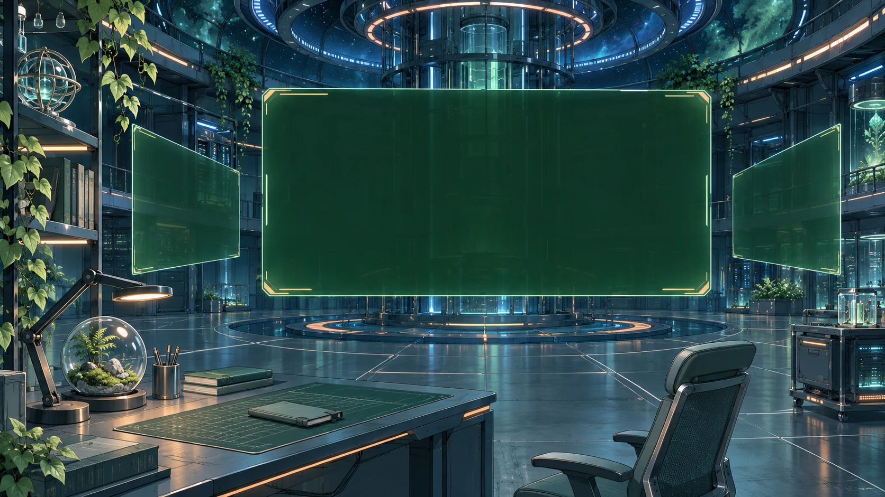
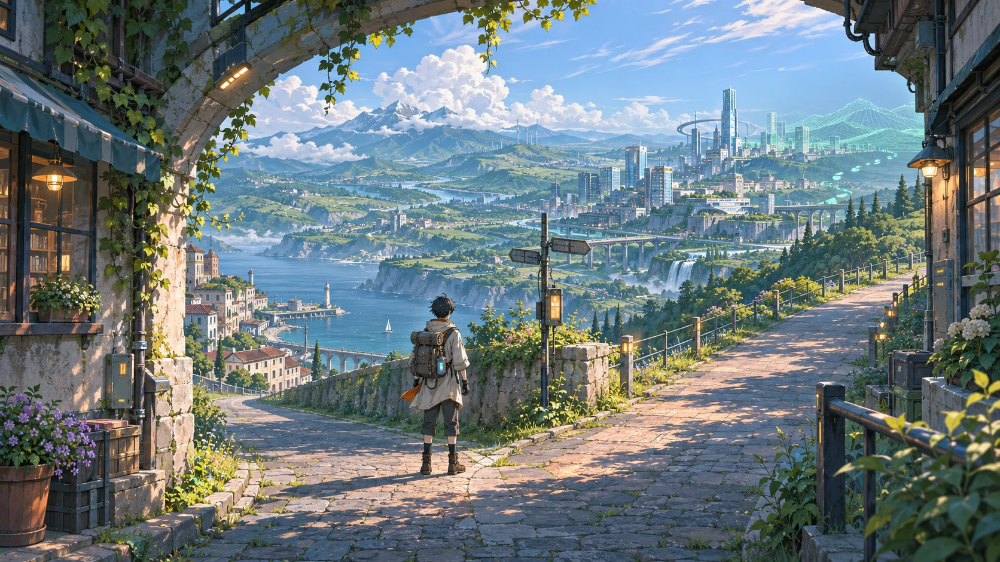
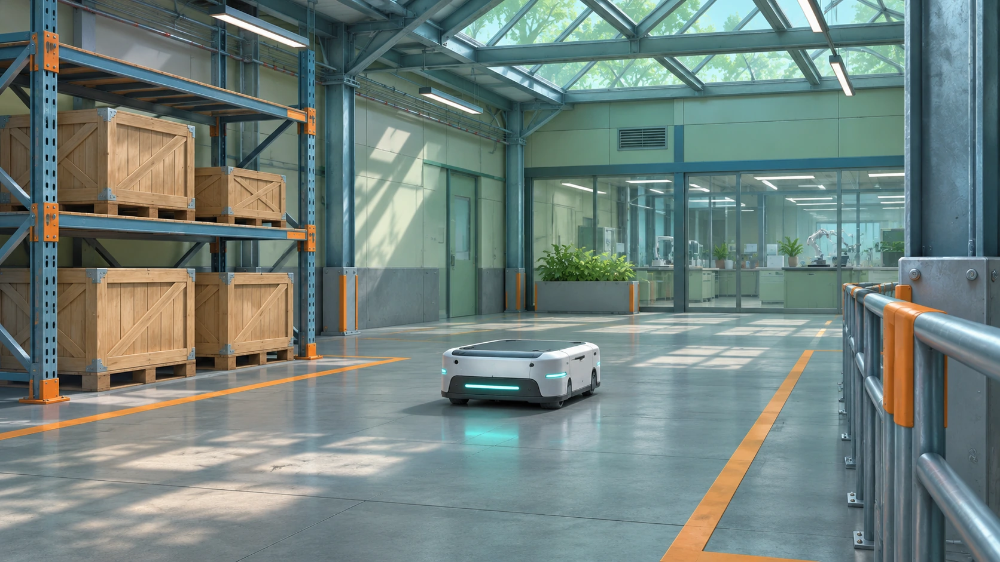
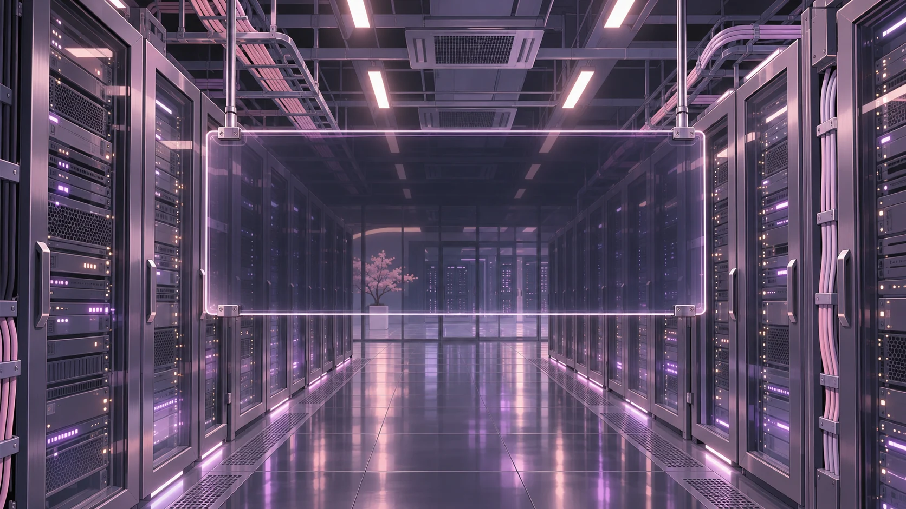
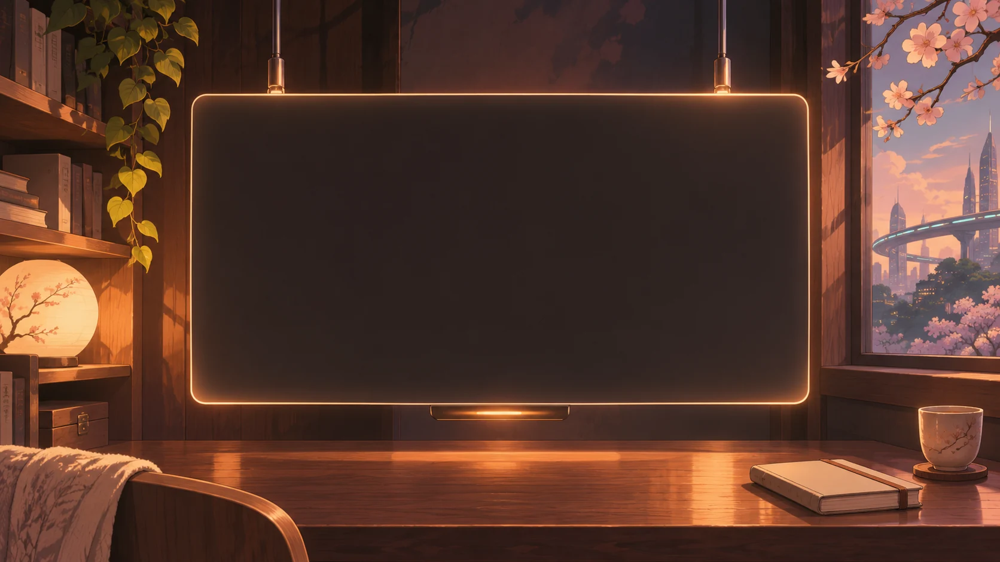
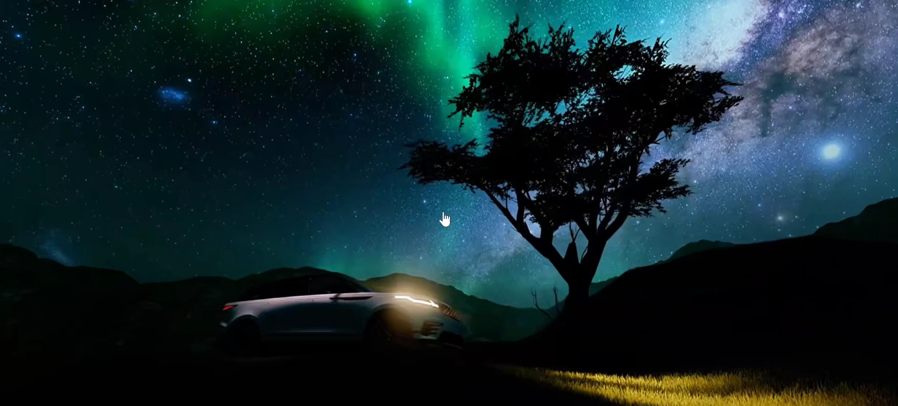
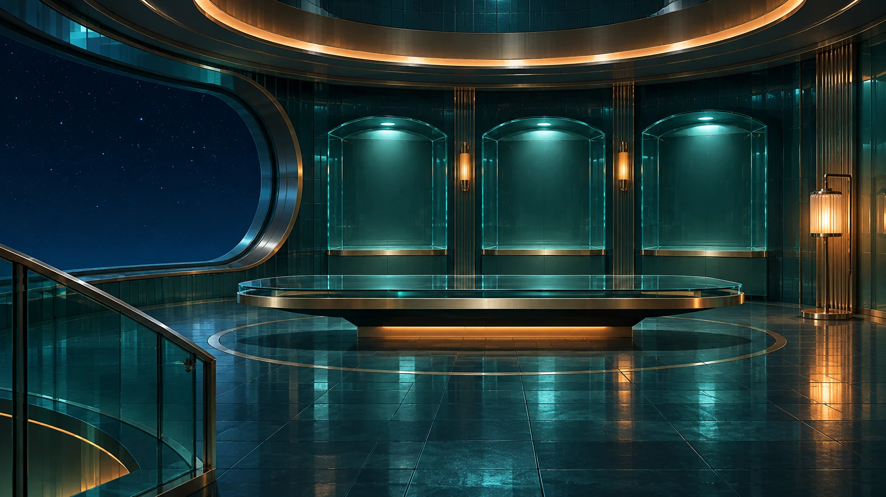
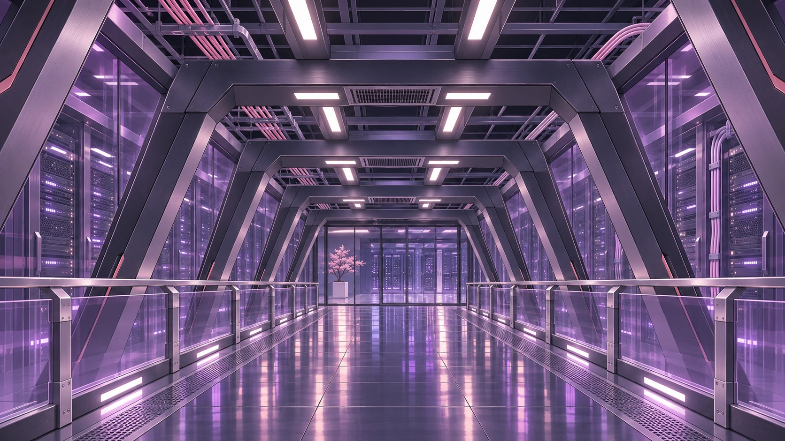
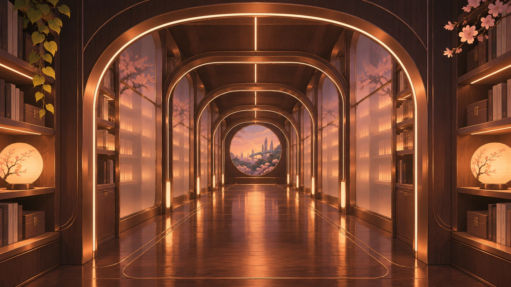

仓库路线演示
这张网格用最短路径计算演示如何改变场景条件。实际仿真还会改变摩擦、物体与传感器等条件，再到真实环境验证机器人能否适应。
走到哪里，世界就延伸到哪里。
沿两条路线看到不同的地方，回到岔路口再认出同一组地标。这里用预制画面演示这两件事。检验一个交互式世界模型时，可以沿陌生路线继续走，再回到刚才的街角，观察重新呈现的地标和道路是否接得上。
观看 Google DeepMind 的交互世界演示 ↗
生活记录待补充。
收藏影像